contour_plot sólo trabaja cuando se utilizan gnuplot o gnuplot_pipes.
Véase también implicit_plot.
Ejemplos:
(%i1) contour_plot (x^2 + y^2, [x, -4, 4], [y, -4, 4]);
(%o1)
(%i2) contour_plot (sin(y) * cos(x)^2, [x, -4, 4], [y, -4, 4]);
(%o2)
(%i3) F(x, y) := x^3 + y^2;
3 2
(%o3) F(x, y) := x + y
(%i4) contour_plot (F, [u, -4, 4], [v, -4, 4]);
(%o4)
(%i5) contour_plot (F, [u, -4, 4], [v, -4, 4],
[gnuplot_preamble, "set size ratio -1"]);
(%o5)
(%i6) set_plot_option ([gnuplot_preamble,
"set cntrparam levels 12"])$
(%i7) contour_plot (F, [u, -4, 4], [v, -4, 4]);
Si in_netmath vale true, plot3d imprime salida de OpenMath en la consola si plot_format vale openmath, en caso contrario, in_netmath (incluso si vale true) deja de tener efecto alguno.
La variable in_netmath no afecta a plot2d.
Muestra un gráfico de una o más expresiones como función de una variable.
La función plot2d representa gráficamente la expresión expr o expresiones [name_1, ..., name_n]. Las expresiones que no sean de tipo paramétrico o discreto deben depender todas ellas de una única variable var, siendo obligatorio utilizar x_range para nombrar la variable y darle sus valores mínimo y máximo usando la siguiente sintaxis: [variable, min, max]. El gráfico mostrará el eje horizontal acotado por los valores min y max.
La expresión a ser representada puede ser dada en la forma discreta o paramétrica, esto es, como una lista que comienza con las palabras discrete o parametric. La clave discrete debe seguirse de dos listas de valores, ambas de igual longitud, conteniendo las coordenadas horizontales y verticales del conjunto de puntos; alternativamente, las coordenadas de cada punto pueden darse como listas de dos valores, todas ellas formando a su vez una lista. La clave parametric debe seguirse de dos expresiones, x_expr y y_expr, junto con un rango de la forma [var, min, max]; ambas expresiones deben depender únicamente de la variable cuyo nombre aparece en el rango. El gráfico mostrará los pares [x_expr, y_expr] según var varía de min a max.
El rango del eje vertical no es necesario especificarlo. Es una más de las opciones de la función, siendo su sintaxis [y, min, max], mostrando entonces la gráfica el rango completo, incluso si la función no alcanza estos valores. En caso de no especificarse el rango vertical en set_plot_option, se establecerá de forma automática como aquel rango en el que la función toma sus valores.
Cualesquiera otras opciones deben ser listas, comenzando con el nombre de la opción.
La opción xlabel puede utilizarse para darle una etiqueta al eje horizontal; si no se usa esta opción, el eje horizontal será etiquetado con el nombre de la variable especificada en x_range.
Del mismo modo se puede asignar una etiqueta al eje vertical con la opción ylabel. Si sólo hay una expresión a ser representada y no se ha hecho uso de la opción ylabel, el eje vertical será etiquetado con la expresión a ser representada, a menos que sea muy larga, o con el texto "discrete data", en caso de gráficos de puntos. Si la expresión es de tipo paramétrico, las dos expresiones que dan las coordenadas horizontal y vertical serán utilizadas para etiquetar ambos ejes.
Las opciones [logx] y [logy] no necesitan parámetros, permitiendo que los ejes horizontal y vertical se dibujen en la escala logarítmica.
Si hay varias expresiones para ser dibujadas, se mostrará una leyenda que identifique a cada una de ellas. Las etiquetas a utilizar pueden especificarse con la opción legend. Si no se utiliza esta opción, Maxima creará etiquetas a partir de las expresiones.
Por defecto, las funciones se dibujarán como un conjunto de segmentos lineales uniendo los puntos que bien se dan en formato discrete, o que se calculan automáticamente a partir de la expresión dada, de acuerdo con el tamaño muestral indicado por la opción nticks. Asimismo, la opción style puede utilizarse para mostrar los puntos aislados, o éstos junto con los segmentos que los unen.
Hay varias opciones globales almacenadas en la lista plot_options, las cuales se pueden modificar con la función set_plot_option; cualquiera de estas opciones puede ignorarse con las opciones que se utilicen desde el comando plot2d.
Las funciones a ser representadas pueden especificarse con el nombre de una función u operador de Maxima o de Lisp, con una expresión lambda de MAxima, o con una expresión válida de maxima. En caso de especificarse con un nombre o expresión lambda, la función debe ser tal que dependa de un solo argumento.
Ejemplos:
Gráficos de funciones ordinarias.
(%i1) plot2d (sin(x), [x, -5, 5])$
(%i2) plot2d (sec(x), [x, -2, 2], [y, -20, 20], [nticks, 200])$
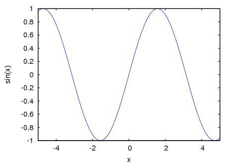
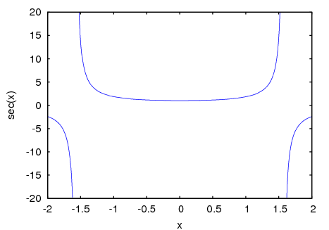
Especificación de funciones por su nombre.
(%i3) F(x) := x^2 $
(%i4) :lisp (defun |$g| (x) (m* x x x))
$g
(%i5) H(x) := if x < 0 then x^4 - 1 else 1 - x^5 $
(%i6) plot2d (F, [u, -1, 1])$
(%i7) plot2d ([F, G, H], [u, -1, 1], [y, -1.5, 1.5])$
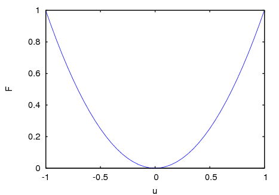
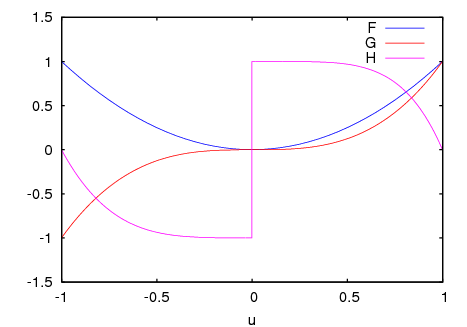
Se puede representar una circunferencia como una función paramétrica de parámetro t. No es necesario especificar el rango del eje horizontal, pues el propio rango de t determina el dominio. No obstante, ya que las longitudes de los ejes horizontal y vertical están en una proporción de 4 a 3, se utilizará la opción xrange para conseguir la misma escala en ambos ejes:
(%i8) plot2d ([parametric, cos(t), sin(t), [t,-%pi,%pi],
[nticks,80]], [x, -4/3, 4/3])$
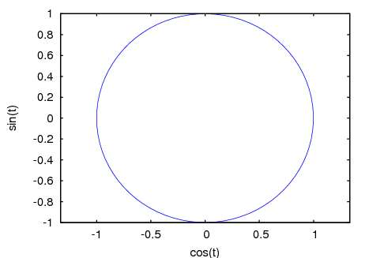
Si se repite el mismo gráfico con solo 8 puntos y se extiende el rango del parámetro para que dé dos vueltas, se tiene el dibujo de una estrella:
(%i9) plot2d ([parametric, cos(t), sin(t), [t, -%pi*2, %pi*2],
[nticks, 8]], [x, -2, 2], [y, -1.5, 1.5])$
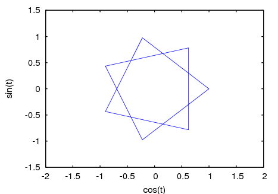
Combinación del gráfico de un polinomio cúbico y de una circunferencia paramétrica:
(%i10) plot2d ([x^3+2, [parametric, cos(t), sin(t), [t, -5, 5],
[nticks, 80]]], [x, -3, 3])$
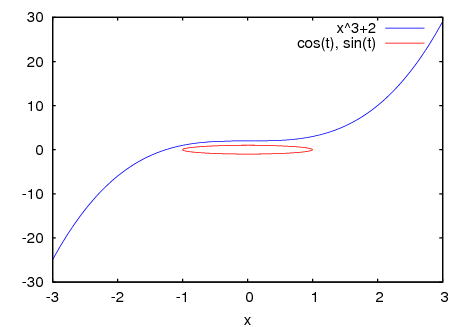
Ejemplo de gráfico logarítmico:
(%i11) plot2d (exp(3*s), [s, -2, 2], [logy])$
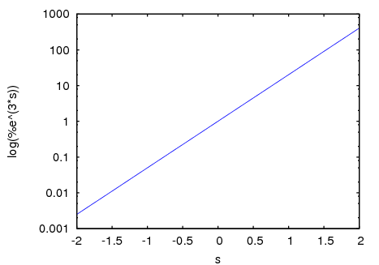
Ejemplos de gráficos de puntos, empezando por la definición de las coordenadas de cinco puntos en los dos formatos admisibles:
(%i12) xx:[10, 20, 30, 40, 50]$
(%i13) yy:[.6, .9, 1.1, 1.3, 1.4]$
(%i14) xy:[[10,.6], [20,.9], [30,1.1], [40,1.3], [50,1.4]]$
Representación de los puntos unidos por segmentos:
(%i15) plot2d([discrete,xx,yy])$
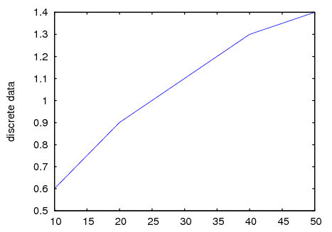
Representación de los puntos aislados, ilustrando también la segunda forma de especificar las coordenadas:
(%i16) plot2d([discrete, xy], [style, points])$
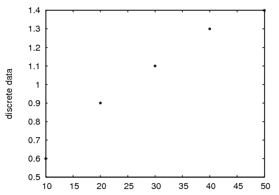
El gráfico de los puntos se puede mostrar conjuntamente con el de la función ter'ica que los predice:
(%i17) plot2d([[discrete,xy], 2*%pi*sqrt(l/980)], [l,0,50],
[style, [points,3,5], [lines,1,3]],
[legend,"experiment","theory"],
[xlabel,"pendulum's length (cm)"],
[ylabel,"period (s)"])$
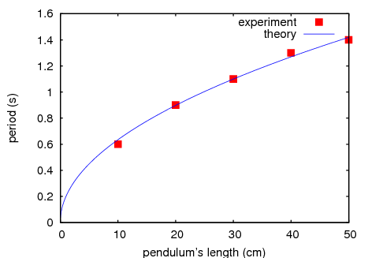
Véase también plot_options, que describe las opciones gráficas, junto con más ejemplos.
El conjunto de puntos puede ser de la forma
[x0, y0, x1, y1, x2, y2, ...]
o
[[x0, y0], [x1, y1], ...]
Un conjunto de puntos también puede contener símbolos con etiquetas u otra información.
xgraph_curves ([pt_set1, pt_set2, pt_set3]);
dibuja los tres conjuntos de puntos como tres curvas.
pt_set: append (["NoLines: True", "LargePixels: true"],
[x0, y0, x1, y1, ...]);
construye el conjunto de puntos, declara que no haya segmentos rectilíneos entre ellos y que se utilicen píxeles grandes. Véase el manual de xgraph para más opciones.
pt_set: append ([concat ("\"", "x^2+y")], [x0, y0, x1, y1, ...]);
construye una etiqueta con el contenido "x^2+y" para este conjunto particular de puntos. Las comillas dobles " al comienzo son las que le indican a xgraph que se trata de una etiqueta.
pt_set: append ([concat ("TitleText: Datos muestrales")], [x0, ...])$
establece el título principal del gráfico como "Datos muestrales" en lugar de "Maxima Plot".
Para hacer un gráfico de barras con columnas de 0.2 unidades de ancho y para dibujar dos diagramas diferentes de este tipo:
(%i1) xgraph_curves ([append (["BarGraph: true", "NoLines: true",
"BarWidth: .2"], create_list ([i - .2, i^2], i, 1, 3)),
append (["BarGraph: true", "NoLines: true", "BarWidth: .2"],
create_list ([i + .2, .7*i^2], i, 1, 3))]);
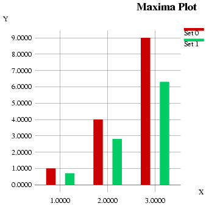
Se utiliza un fichero temporal `xgraph-out'.
Cada elemento de plot_options es una lista de dos o más elementos, el primero de los cuales es el nombre de la opción, siendo los siguientes los valores de aquélla. En algunos casos el valor asignado es a su vez una lista, que puede contener varios elementos.
Las opciones gráficas que reconocen plot2d y plot3d son:
Determina qué programa gráfico se va a utilizar con plot2d y plot3d.
Controla si el visor apropiado para la salida gráfica debe ejecutarse o no.
Ejecuta el visor.
No ejecuta el visor.
Rango vertical del gráfico.
Ejemplo:
[y, - 3, 3]
Establece el rango vertical como [-3, 3].
Ejemplo:
plot2d (log(x), [x, -5, 5], [plot_realpart, false]);
plot2d (log(x), [x, -5, 5], [plot_realpart, true]);
El valor por defecto es false.
En plot2d, es el número inicial de puntos utilizados por el procedimiento adaptativo para la representación de funciones. También es el número de puntos a ser calculados en los gráficos paramétricos.
Ejemplo:
[nticks, 20]
El valor por defecto para nticks es 10.
Número máximo de particiones utilizado por el algoritmo adaptativo de representación gráfica.
Ejemplo:
[adapt_depth, 5]
El valor por defecto para adapt_depth es 10.
Etiqueta del eje horizontal en gráficos 2d.
Ejemplo:
[xlabel, "Time in seconds"]
Etiqueta del eje vertical en gráficos 2d.
Ejemplo:
[ylabel, "Temperature"]
Hace que el eje horizontal en los gráficos 2d se dibuje en la escala logarítmica. No necesita de parámetros adicionales.
Hace que el eje vertical en los gráficos 2d se dibuje en la escala logarítmica. No necesita de parámetros adicionales.
Etiquetas para las expresiones de los gráficos 2d. Si hay más expresiones que etiquetas, éstas se repetirán. Por defecto se pasarán los nombres de las expresiones o funciones, o las palabras discrete1, discrete2, ..., para gráficos de puntos.
Ejemplo:
[legend, "Set 1", "Set 2", "Set 3"]
Estilos a utilizar para las funciones o conjuntos de datos en gráficos 2d. A la palabra style debe seguirle uno o más estilos. Si hay más funciones o conjuntos de datos que estilos, éstos se repetirán. Los estilos que se admiten son: lines para segmentos lineales, points para puntos aislados, linespoints para segmentos y puntos, dots para pequeños puntos aislados. Gnuplot también acepta el estilo impulses.
Cada estilo puede ir encerrado en una lista con parámetros adicionales: lines acepta uno o dos números: el ancho del segmento y un entero que identifica el color; points acepta uno o dos parámetros, el primero es el radio de los puntos y el segundo un entero que en Gnuplot selecciona diferentes formas y colores para los puntos y que en Openmath cambia el color de éstos; linesdots acepta hasta cuatro parámetros, los dos primeros son lo mismo que en lines y los dos últimos son lo mismo que en points.
Ejemplo:
[style,[lines,2,3],[points,1,4]]
En Gnuplot, con este código se representaría la primera (tercera, quinta, etc.) expresión con segmentos azules de ancho 2, y la segunda (cuarta, sexta, etc.) expresión con cuadrados verdes de tama24no 1. En Openmath, la primera expresión se representaría con segmentos magenta de ancho 2, y la segunda con puntos naranja de radio 1. Nótese que openmath_color(3) y openmath_color(4) devuelven magenta y orange, respectivamente.
El estilo por defecto es lines de ancho 1 y diferentes colores.
Ejemplo:
[grid, 50, 50]
establece la retícula en 50 por 50 puntos. El valor por defecto es 30 por 30.
Permite que se realicen transformaciones en los gráficos de tres dimensiones.
Ejemplo:
[transform_xy, false]
El valor por defecto de transform_xy es false. Cuando vale false, da el resultado de
make_transform([x,y,z], f1(x,y,z), f2(x,y,z), f3(x,y,z))$
La transformación polar_xy está definida en Maxima. Devuelve la misma transformación que
make_transform ([r, th, z], r*cos(th), r*sin(th), z)$
Opciones de Gnuplot:
Hay varias opciones gráficas que son específicas de gnuplot. Algunas de ellas son comandos propios de gnuplot que se especifican como cadenas alfanuméricas. Consúltese la documentación de Gnuplot para más detalles.
Establece el terminal de salida para Gnuplot.
Gnuplot muestra el gráfico en una ventana gráfica.
Gnuplot muestra el gráfico en la consola de Maxima en estilo ASCII artístico.
Gnuplot genera código en lenguaje PostScript. Si a la opción gnuplot_out_file se le da el valor filename, Gnuplot escribe el código PostScript en filename. En caso contrario, se guarda en el archivo maxplot.ps.
Gnuplot puede generar gráficos en otros muchos formatos, tales como png, jpeg, svg etc. Para crear gráficos en cualquera de estos formatos, a la opción gnuplot_term se le puede asignar cualquiera de los terminales admitidos por Gnuplot, bien por su nombre (símbolo) bien con la especificación completa del terminal (cadena). Por ejemplo, [gnuplot_term,png] guarda el gráfico en formato PNG (Portable Network Graphics), mientras que [gnuplot_term,"png size 1000,1000"] lo hace con dimensiones 1000x1000 píxeles. Si a la opción gnuplot_out_file se le da el valor filename, Gnuplot escribe el código PostScript en filename. En caso contrario, se guarda en el archivo maxplot.term, siendo term el nombre del terminal.
Guarda el gráfico generado por Gnuplot en un archivo.
No se especifica nombre de fichero.
Con [gnuplot_out_file, "myplot.ps"] se envía código PostScript al archivo myplot.ps cuando se utiliza conjuntamente con el terminal PostScript de Gnuplot.
Controla la utilización del modo PM3D, que tiene capacidades avanzadas para gráficos tridimensionales. PM3D sólo está disponible en versiones de Gnuplot posteriores a la 3.7. El valor por defecto de gnuplot_pm3d es false.
Ejemplo:
[gnuplot_pm3d, true]
Introduce instrucciones de gnuplot antes de que se haga el dibujo. Puede utilizarse cualquier comando válido de gnuplot. Si interesa introducir varios comandos se separarán con punto y coma. El ejemplo que se muestra produce un gráfico en escala logarítmica. El valor por defecto de gnuplot_preamble es la cadena vacía "".
Ejemplo:
[gnuplot_preamble, "set log y"]
Controla los títulos dados a la clave del gráfico. El valor por defecto es [default], el cual establece automáticamente los títulos para cada curva representada. Si no es [default], gnuplot_curve_titles debe contener una lista de cadenas, cada una de las cuales es "title 'title_string'". (Para desactivar la clave del gráfico, añádase "set nokey" a gnuplot_preamble.)
Ejemplo:
[gnuplot_curve_titles, ["title 'My first function'", "title 'My second function'"]]
Es una lista de cadenas que controlan el aspecto de las curvas, como el color, el ancho, la discontinuidad, etc., y que deben enviarse al comando plot de gnuplot. El valor por defecto es ["with lines 3", "with lines 1", "with lines 2", "with lines 5", "with lines 4", "with lines 6", "with lines 7"], que realiza un ciclo sobre un conjunto de colores diferentes. Consúltese la documentación de gnuplot sobre plot para más información.
Ejemplo:
[gnuplot_curve_styles, ["with lines 7", "with lines 2"]]
Comando de gnuplot para establecer el tipo de terminal por defecto. El valor por defecto es set term windows "Verdana" 15 en sistemas Windows, y set term x11 font "Helvetica,16" en sistemas X11.
Ejemplo:
[gnuplot_default_term_command, "set term x11"]
Comando de gnuplot para establecer el tipo de terminal para el terminal oculto. El valor por defecto es "set term dumb 79 22", que da una salida de texto de 79 por 22 caracteres.
Ejemplo:
[gnuplot_dumb_term_command, "set term dumb 132 50"]
Comando de gnuplot para establecer el tipo de terminal para el terminal PostScript. El valor por defecto es "set size 1.5, 1.5;set term postscript eps enhanced color solid 24", que establece un tamaño de 1.5 veces el valor por defecto de gnuplot, junto con un tamaño de fuente de 24, entre otras cosas. Consúltese la documentación de gnuplot para más información sobre set term postscript.
Ejemplo:
Todas las figuras de los ejemplos de la función plot2d de este manual se obtuvieron a partir de archivos Postscript generados asignándole a gnuplot_ps_term_command el valor
[gnuplot_ps_term_command,"set size 1.3, 1.3;\
set term postscript eps color solid lw 2.5 30"]
Ejemplos:
(%i1) plot2d (sin(x), [x, 0, 2*%pi], [gnuplot_term, ps],
[gnuplot_out_file, "sin.eps"])$
(%i2) plot2d ([gamma(x), 1/gamma(x)], [x, -4.5, 5], [y, -10, 10],
[gnuplot_preamble, "set key bottom"])$
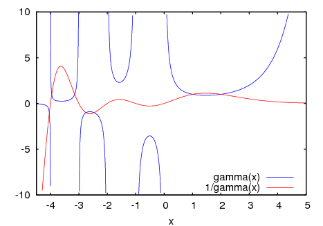
(%i3) my_preamble: "set xzeroaxis; set xtics ('-2pi' -6.283, \
'-3pi/2' -4.712, '-pi' -3.1415, '-pi/2' -1.5708, '0' 0, \
'pi/2' 1.5708, 'pi' 3.1415,'3pi/2' 4.712, '2pi' 6.283)"$
(%i4) plot2d([cos(x), sin(x), tan(x), cot(x)],
[x, -2*%pi, 2.1*%pi], [y, -2, 2],
[gnuplot_preamble, my_preamble]);
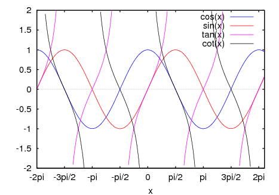
(%i5) my_preamble: "set xzeroaxis; set xtics ('-2{/Symbol p}' \
-6.283, '-3{/Symbol p}/2' -4.712, '-{/Symbol p}' -3.1415, \
'-{/Symbol p}/2' -1.5708, '0' 0,'{/Symbol p}/2' 1.5708, \
'{/Symbol p}' 3.1415,'3{/Symbol p}/2' 4.712, '2{/Symbol p}' \
6.283)"$
(%i6) plot2d ([cos(x), sin(x), tan(x)], [x, -2*%pi, 2*%pi],
[y, -2, 2], [gnuplot_preamble, my_preamble],
[gnuplot_term, ps], [gnuplot_out_file, "trig.eps"]);
(%i7) plot3d (atan (-x^2 + y^3/4), [x, -4, 4], [y, -4, 4],
[grid, 50, 50], [gnuplot_pm3d, true])$
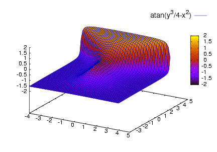
(%i8) my_preamble: "set pm3d at s;unset surface;set contour;\
set cntrparam levels 20;unset key"$
(%i9) plot3d(atan(-x^2 + y^3/4), [x, -4, 4], [y, -4, 4],
[grid, 50, 50], [gnuplot_pm3d, true],
[gnuplot_preamble, my_preamble])$

(%i10) plot3d (cos (-x^2 + y^3/4), [x, -4, 4], [y, -4, 4],
[gnuplot_preamble, "set view map; unset surface"],
[gnuplot_pm3d, true], [grid, 150, 150])$

(%i1) plot3d (2^(-u^2 + v^2), [u, -3, 3], [v, -2, 2]);
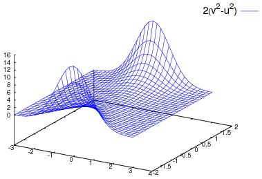
dibuja z = 2^(-u^2+v^2) con u y v variando en [-3,3] y [-2,2] respectivamente, y con u sobre el eje x, y con v sobre el eje y.
El mismo gráfico se puede dibujar usando openmath (si Xmaxima fué instalado):
(%i2) plot3d (2^(-u^2 + v^2), [u, -3, 3], [v, -2, 2],
[plot_format, openmath]);
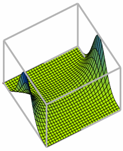
en este caso el ratón se puede usar para rotar el gráfico y ver la superficie desde diferentes lados.
Un ejemplo del tercer patrón de argumentos es
(%i3) plot3d ([cos(x)*(3 + y*cos(x/2)), sin(x)*(3 + y*cos(x/2)),
y*sin(x/2)], [x, -%pi, %pi], [y, -1, 1], ['grid, 50, 15]);
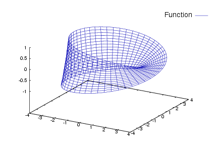
que dibuja una banda de Moebius, parametrizada por las tres expresiones dadas como primer argumento a plot3d. Un argumento opcional ['grid, 50, 15] da el número de intervalos en las direcciones x e y, respectivamente.
Cuando la función a representar ha sido definida en Maxima mediante := o define, o en Lisp por DEFUN o DEFMFUN, entonces se podrá especificar por su nombre. Las funciones definidas a nivel de LISP por DEFMSPEC, las funciones de simplificación, junto con muchas otras funciones, no pueden especificarse directamente por su nombre.
Este ejemplo muestra un gráfico de la parte real de z^1/3.
(%i4) plot3d (r^.33*cos(th/3), [r, 0, 1], [th, 0, 6*%pi],
['grid, 12, 80], ['transform_xy, polar_to_xy]);
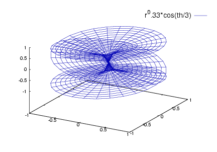
Otros ejemplos son la botella de Klein:
(%i5) expr_1: 5*cos(x)*(cos(x/2)*cos(y) + sin(x/2)*sin(2*y)
+ 3.0) - 10.0$
(%i6) expr_2: -5*sin(x)*(cos(x/2)*cos(y) + sin(x/2)*sin(2*y)
+ 3.0)$
(%i7) expr_3: 5*(-sin(x/2)*cos(y) + cos(x/2)*sin(2*y))$
(%i8) plot3d ([expr_1, expr_2, expr_3], [x, -%pi, %pi],
[y, -%pi, %pi], ['grid, 40, 40]);
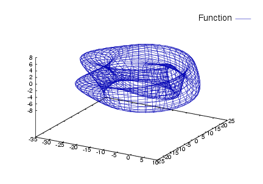
y un toro:
(%i9) expr_1: cos(y)*(10.0+6*cos(x))$
(%i10) expr_2: sin(y)*(10.0+6*cos(x))$
(%i11) expr_3: -6*sin(x)$
(%i12) plot3d ([expr_1, expr_2, expr_3], [x, 0, 2*%pi],
[y, 0, 2*%pi], ['grid, 40, 40]);
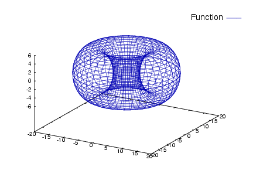
En ocasiones puede ser necesario definir una función para representarla. Todos los argumentos de plot3d se evalúan, de manera que puede ser difícil escribir una expresión que haga lo que el usuario realmente quiere; en tales casos facilita las cosas definir previamente la función.
(%i13) M: matrix([1, 2, 3, 4], [1, 2, 3, 2], [1, 2, 3, 4],
[1, 2, 3, 3])$
(%i14) f(x, y) := float (M [?round(x), ?round(y)])$
(%i15) plot3d (f, [x, 1, 4], [y, 1, 4], ['grid, 4, 4])$
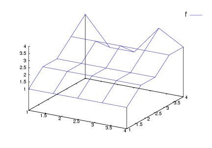
Véase plot_options para más ejemplos.
make_transform ([r, th, z], r*cos(th), r*sin(th), z)$
es una transformación para pasar a coordenadas polares.
La función set_plot_option evalúa sus argumentos y devuelve plot_options tal como queda después de la actualización.
Véanse también plot_options, plot2d y plot3d.
Ejemplos:
Se modifican los valores de grid y x. Si a un nombre de opción de plot_options tiene ya un valor asignado, hacerlo preceder de un apóstrofo para evitar su evaluación.
(%i1) set_plot_option ([grid, 30, 40]);
(%o1) [[x, - 1.755559702014E+305, 1.755559702014E+305],
[y, - 1.755559702014E+305, 1.755559702014E+305], [t, - 3, 3],
[grid, 30, 40], [transform_xy, false], [run_viewer, true],
[plot_format, gnuplot], [gnuplot_term, default],
[gnuplot_out_file, false], [nticks, 10], [adapt_depth, 10],
[gnuplot_pm3d, false], [gnuplot_preamble, ],
[gnuplot_curve_titles, [default]],
[gnuplot_curve_styles, [with lines 3, with lines 1,
with lines 2, with lines 5, with lines 4, with lines 6,
with lines 7]], [gnuplot_default_term_command, ],
[gnuplot_dumb_term_command, set term dumb 79 22],
[gnuplot_ps_term_command, set size 1.5, 1.5;set term postscript #
eps enhanced color solid 24]]
(%i2) x: 42;
(%o2) 42
(%i3) set_plot_option (['x, -100, 100]);
(%o3) [[x, - 100.0, 100.0], [y, - 1.755559702014E+305,
1.755559702014E+305], [t, - 3, 3], [grid, 30, 40],
[transform_xy, false], [run_viewer, true],
[plot_format, gnuplot], [gnuplot_term, default],
[gnuplot_out_file, false], [nticks, 10], [adapt_depth, 10],
[gnuplot_pm3d, false], [gnuplot_preamble, ],
[gnuplot_curve_titles, [default]],
[gnuplot_curve_styles, [with lines 3, with lines 1,
with lines 2, with lines 5, with lines 4, with lines 6,
with lines 7]], [gnuplot_default_term_command, ],
[gnuplot_dumb_term_command, set term dumb 79 22],
[gnuplot_ps_term_command, set size 1.5, 1.5;set term postscript #
eps enhanced color solid 24]]
Funciones para trabajar con el formato gnuplot_pipes:
This document was generated by Robert Dodier on agosto, 25 2007 using texi2html 1.76.
Created with the Personal Edition of HelpNDoc: Easily create Web Help sites